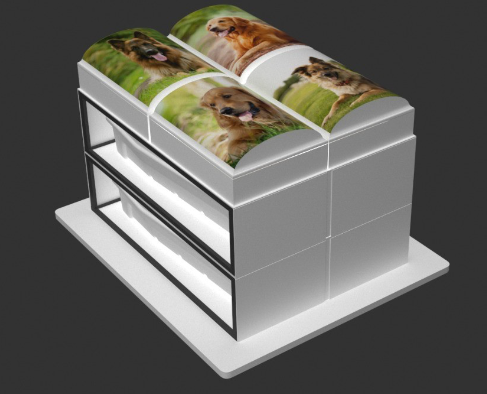
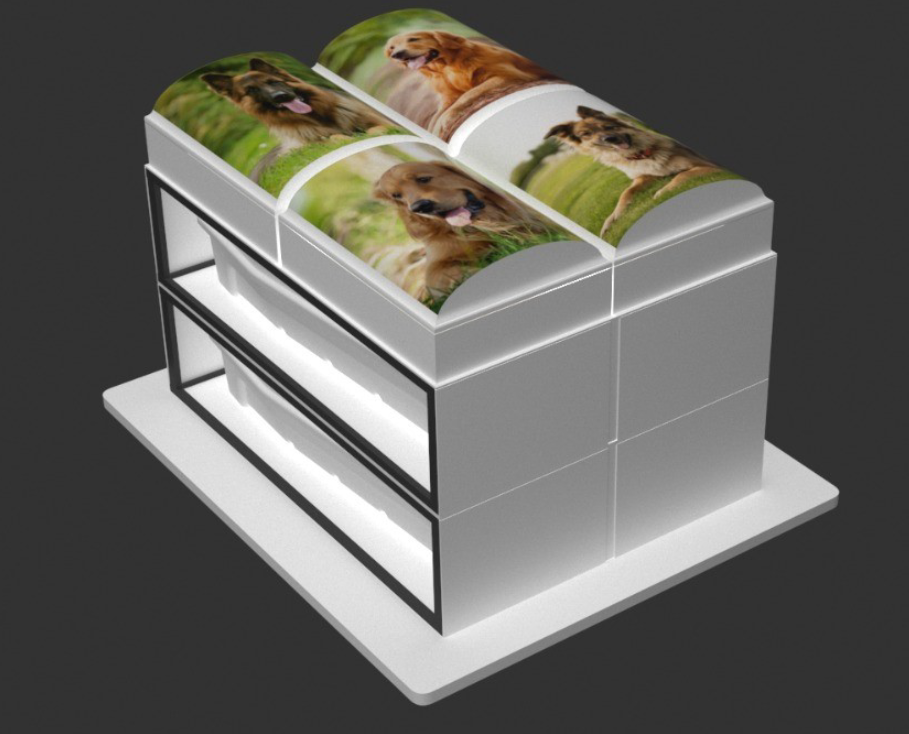

Capsarium, preservando o legado familiar!
É uma empresa focada em sustentabilidade socioambiental assistida, em cima da filosofia que não precisamos contaminar o mundo após a morte “partida”, deixaremos de virar “lixo contaminante” para virar energia para a vida, mesmo não estando presente no mundo material, centralizando esforços e pesquisas para garantir que valores, memórias e o legado da família continuem sendo preservados, sem haver contaminação e degradação ao meio ambiente, que ao longo dos anos vem sofrendo com as ações humanas, contaminando, poluindo e vandalizando durante anos os locais sagrados da nossa memória.
Quem somos
Grupo Capsarium é a primeira startup brasileira no seguimento funerário e parque memorial (cemitério) mais sustentável e humanizado!
Grupo Capsarium é a primeira startup brasileira no seguimento funerário e parque memorial (cemitério) mais sustentável e humanizado!
Usando inovação tecnológica, com o compromisso socioambiental, focada em soluções eco-sustentáveis, voltado para a revitalização dos memoriais parques públicos e privados, desenvolvendo a cada dia novas tecnologias para reduzir ou até eliminar os impactos ambientais provocados pelos Resíduos Contínuos Contaminantes (RCC) gerado pelo modelo atual, buscamos transformar o atual cenário de degradação ambiental, para um novo cenário sem degradar, contaminar o meio ambiente.

Nossa história
Um legado deixado há mais de 1 século de experiência dedicados pela nossa ancestralidade ao seguimento funerário passando de gerações após gerações, reescrevendo a histórias ao logo de décadas. Muitos conceitos foram se renovando durante esse período, devido aos serviços prestados ao longo dos anos e as mudanças nos padrões ambientais, passaram exigir mudanças de sustentabilidade.
Por esses motivos em 2012 iniciamos uma série de pesquisas junto com universidades e centros de pesquisa renomados visando substituir a moldura nas urnas funerárias, o modelo atual, urnas de madeira, sepulturas de cimento/areia e granito, por uma inovação tecnológica 100% estanque e utilizando, aplicando política pública socio ambiental, com o objetivo de propor uma alternativa ao uso desses materiais que degradam a natureza e não impedem a contaminação do meio ambiente.
Missão (icone personalizado)
Nossa missão é reduzir ou até eliminar os impactos ambientais provocados pelo Resíduo Contínuo Contaminante (RCC) gerado nesses espaços, por meio de novas tecnologias e processos ambientalmente responsáveis e homologados, sem impacto social e com política pública.
Visão (icone personalizado)
Preservar a memoria das pessoas e seu legado construído na linha do tempo.
Podemos afirmar que vamos trocar a condição “ lixo “, para a fórmula de bio combustível, crédito carbono, “ A vida continua sendo vida pós morte “, temos o primeiro modelo de sepultura combinada com o tutor e seu pet (gato / cachorro, etc.), em lóculos separados, mas no mesmo ambiente.
Projeto Capsarium é uma tecnologia inovadora no seguimento funerário e revitalização dos memoriais parques (cemitérios).
Inovação
Sustentabilidade
Tecnologia

Compromisso com a Sustentabilidade e a Legislação Nosso projeto está em total conformidade com a legislação vigente, incluindo:
Lei da Inovação Tecnológica (10.973/2004) e suas atualizações;
Marco Legal das Startups (182/2021) e suas atualizações;
Política Nacional de Resíduos Sólidos (PNRS – 12.305/2010) e suas regulamentações estaduais.
Nossa proposta
Permitir uma mudança radical na logística da estrutura das empresas, reduzindo gastos operacionais e criando o primeiro modelo de logística reversa da urna e dos restos mortais “no mundo” - não há nada semelhante à nossa proposta.
Estamos entrando na era do serviço funerário 4.0, permitindo as pessoas, participarem, opinarem e escolherem a homenagem customizada ao seu ente querido.
Em toda a nossa linha do tempo, customizamos nossos costumes, personalizando eventos, lares, festas, objetos etc.
Agora teremos a opção de customizar a última homenagem ao nosso ente querido, que estará pontuando com uma história de vida e um legado familiar.
Revitalização
 

Revitalizar os ambientes atuais dos cemitérios públicos, permitindo um novo layout e sua ampliação de capacidade, sem a necessidade de grandes investimentos, os modelos de edificações caros, ............................. e dificultando o acesso as pessoas de ...............
Será possível e viável aumentar a capacidade ocupacional dos atuais sem restauração cara ou com custo social alto.
Valores ....................... esses espaços. Inclusive eliminando o custo de:
cimentos, pedras, ..........., metais, areia e brita.
Utilizando materiais nobres, que durem mais de 500 anos, reciclaveis, reutilizaveis, acabando coma a proliferação de insetos, artropedes e outros que usam as sepulturas como fonte de alimentos.
Produtos:
Urnas / Urnas pet / lóculos
Equipe
Empresários, pesquisadores e universidades como UFTM, P&D (Sara) e outros profissionais qualificados
Parceiros
UFTM – Universidade Federal do Triângulo Mineiro
MP – Ministério público
IFTM – Instituto Federal do Triângulo Mineiro
FAPEMIG
BDMG – Banco de desenvolvimento do estado de Minas Gerais